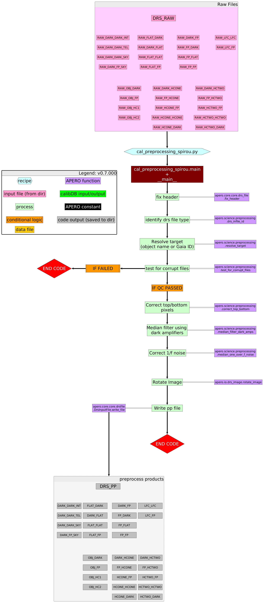

apero_preprocess_spirou¶
1. Description¶
SHORTNAME: PP
Pre-processing¶
The raw images (those retrieved from the telescope after the ramp fitting algorithm has been run) require some preliminary processing to remove detector artifacts that are due to the detector. These artifacts are documented in this section. Note all frames independent of DPRTYPE are preprocessed in the same manner before any other step of APERO is run.
Header fixes and object resolution¶
The SPIRou header provides the required information to process files. However, to facilitate data reduction a few header keys are added and updated.
The first header key we add is the APERO object name (DRSOBJN), this header key is the object name used throughout APERO. In general, it is the object name taken from the raw input file but all punctuation and white spaces are removed and replaced with underscores and all characters are capitalized (+ and - are also replaced with P and M respectively). This avoids names with slightly different names being considered as different objects (e.g., TRAPPIST-1 vs Trappist 1) and allows for use in filenames. Next, the target type (TRG_TYPE) with a value of either TARGET, SKY or a blank string is added. This key exists in the raw file header of newer files (2020 and later) but has been found to be incorrect or missing for older files, especially when dealing with some sky frames (sky frames can usually be identified by a suffix or prefix sky in the object name if not already identified as a sky by the target type header key). As well as this a mid-exposure time (MJDMID) is added which is equivalent to the time recorded at the end of exposure minus half the exposure time (MJDEND - EXPTIME/2) this time is used throughout APERO and is the recommended time to use, as opposed to other header keys such as MJSTART, which isn’t strictly the start of observation time but the time the observation request is sent. The last two keys added are the DRSMODE and DPRTYPE.
Once the headers are fixed with the above additions and corrections (if the raw files are of DPRTYPE OBJ_FP, OBJ_DARK, POL_FP, or POL_DARK) we cross-match the OBJECTNAME with an object database of object names, positions, motions, parallax, known radial velocity estimates, temperatures and aliases. These are mostly sourced directly from SIMBAD, and cross-matched with the most up-to-date proper motion and parallax catalogues (based on an id cross-match from SIMBAD with Gaia EDR3; DR2; DR1; UCAC4; or Hipparcos; ipp_1997). This ensures the object name given is not already known by another object name, and all astrometric parameters are consistent even from differing PIs. This is important for steps in the telluric process where we combine all objects of the same DRSOBJN where possible. This local database of object names can be updated and is maintained in such a way to keep consistency or inform users when updates have been made. All reductions of a single DRSOBJN should always be done with a single set of astrometric parameters.
File corruption check¶
Not every raw file contains good data. For example, a rare occurrence where the detector acquisition system has a synchronization issue in retrieving the pixel stream leads to a 1-pixel offset of the readout. Therefore as part of the pre-processing, we check for corrupt files. We do this by comparing images to a list of known hot pixels. We verify that hot pixels are at the expected position. If they are not at the expected position, this is corrected by registering the pixel grid to the nominal pixel position. Missed lines or columns at the edge of the array are replaced by NAN values. This does not lead to a loss in science pixels as the 4-pixel edge of the array consists of non-light-sensitive reference pixels.
Top and bottom pixel correction¶
The first part of the correlated noise filtering accounts for gradients along the slow axis of the amplifier readout by removing the slope between the first and last read reference pixels within each amplifier. We take a median of the amplifier bottom and top reference pixels and subtract for each amplifier the slope between these regions. This accounts for fluctuations in the detector electronics on timescales comparable to or longer than the readout time. Higher-frequency noises are handled as a common-mode between amplifiers in the following step. High-frequency readout noise that is not correlated between amplifiers cannot be corrected as it overlaps with science data and cannot be measured independently; it represents the limiting factor for the fainter targets observed with SPIRou.
Median filter dark amplifiers¶
High-frequency common-mode noise between amplifiers is removed by using side reference pixels. We take left and right reference pixels and median the 8 lateral reference pixels into a 4088-pixel long fast axis reference unilluminated pixel. This measurement of the common noise is a combination of both pixel-to-pixel readout noise and actual 1/f noise that we are attempting to remove. The readout noise component is a high-frequency component while the 1/f dominates on larger spatial scales. We, therefore, median-filter the reference pixel vector in order to minimize the impact of readout noise while maximizing the subtraction of lower frequencies in the 1/f noise. The optimal median filter size was found to be 32 pixels. Once filtered, this common-mode 1/f noise is subtracted from all columns of the science array.
1/f noise correction¶
While the lower frequency component of the common-mode 1/.f noise is handled using non-light-sensitive reference pixels, the large (~800-pixel wide beyond K-band orders) region of the SPIRou array that is not illuminated by diffraction orders allows for a measurement of the high-frequency component of the common mode. While the region does see some large-scale scattered light from the rest of the array, there are no high-spatial frequency structures illuminating this part of the array. We, therefore, apply high-spatial filtering of this area and take a median along the cross-dispersion axis. We construct the equivalent of a reference pixel column, but with an effective readout noise ~10 times smaller than what can be obtained with the 8 reference pixels (4 on each side) available for each along-the-dispersion-axis position. We replicate this structure and subtract it column-wise, further reducing the contribution of common-mode noise in illuminated pixels.
Cosmic ray rejection¶
Cosmic rays hits are easier to flag with infrared arrays than they are with CCD data sets due to the acquisition through multiple
readouts. Pixels without a cosmic ray hit are expected to see an accumulation of electrons in their well that is linear with time while a cosmic ray hit would induce a glitch in that accumulation that can easily be flagged. One could attempt to reconstruct a ramp while including a discontinuity at the moment of the hit; considering that cosmic rays are rare and that this would add a significant burden in terms of data processing, we opt to simply flag pixels hit by a cosmic ray as invalid (NAN values). The flagging of cosmic rays is done in two steps.
First, we check for the consistency between the total number of photons received over the entire ramp and the formal ramp error
statistics from the linear fit. Discrepant points, even if they remain within the unsaturated regime of the pixel dynamic range, are flagged as invalid. Second, the ramp fitting of the pixel value provides both a slope and an intercept. The slope is the signal used for scientific analysis, and the intercept is discarded. This intercept value corresponds to the state of the detector prior to the first readout, which, for HxRG arrays, is a structured signal. The intercept values have a typical dispersion of ~1000, ADUs, and discrepant values indicate that photons within a given pixel do not follow a linear accumulation with time. The consistency of the intercept value with expected statistics is used to further flag invalid pixels within a ramp.
Rotation of image¶
The pre-processed images are then rotated to match the HARPS orientation. This is a legacy change left over from when some algorithms shared a common ancestry with the HARPS DRS pipeline. For SPIRou data this is equivalent to a 90-degree clockwise rotation.
2. Schematic¶
{kind=link}
3. Usage¶
apero_preprocess_spirou.py {obs_dir}[STRING] [FILE:DRS_RAW] {options}
{obs_dir}[STRING] // OBS_DIR_HELP
[FILE:DRS_RAW] // Any raw files are currently allowed. Multiple files inputted are handled separately (one after the other).
4. Optional Arguments¶
--skip[True/False] // [BOOLEAN] If True skips preprocessed files that are already found
5. Special Arguments¶
--xhelp[STRING] // Extended help menu (with all advanced arguments)
--debug[STRING] // Activates debug mode (Advanced mode [INTEGER] value must be an integer greater than 0, setting the debug level)
--listing[STRING] // Lists the night name directories in the input directory if used without a 'directory' argument or lists the files in the given 'directory' (if defined). Only lists up to 15 files/directories
--listingall[STRING] // Lists ALL the night name directories in the input directory if used without a 'directory' argument or lists the files in the given 'directory' (if defined)
--version[STRING] // Displays the current version of this recipe.
--info[STRING] // Displays the short version of the help menu
--program[STRING] // [STRING] The name of the program to display and use (mostly for logging purpose) log becomes date | {THIS STRING} | Message
--recipe_kind[STRING] // [STRING] The recipe kind for this recipe run (normally only used in apero_processing.py)
--parallel[STRING] // [BOOL] If True this is a run in parellel - disable some features (normally only used in apero_processing.py)
--shortname[STRING] // [STRING] Set a shortname for a recipe to distinguish it from other runs - this is mainly for use with apero processing but will appear in the log database
--idebug[STRING] // [BOOLEAN] If True always returns to ipython (or python) at end (via ipdb or pdb)
--ref[STRING] // If set then recipe is a reference recipe (e.g. reference recipes write to calibration database as reference calibrations)
--crunfile[STRING] // Set a run file to override default arguments
--quiet[STRING] // Run recipe without start up text
--nosave[STRING] // Do not save any outputs (debug/information run). Note some recipes require other recipesto be run. Only use --nosave after previous recipe runs have been run successfully at least once.
--force_indir[STRING] // [STRING] Force the default input directory (Normally set by recipe)
--force_outdir[STRING] // [STRING] Force the default output directory (Normally set by recipe)
6. Output directory¶
DRS_DATA_WORKING // Default: "tmp" directory
7. Output files¶
name |
description |
file type |
suffix |
input file |
|---|---|---|---|---|
DRS_PP |
Generic pre-processed file |
.fits |
_pp |
DRS_RAW |
8. Debug plots¶
No debug plots.
9. Summary plots¶
No summary plots.